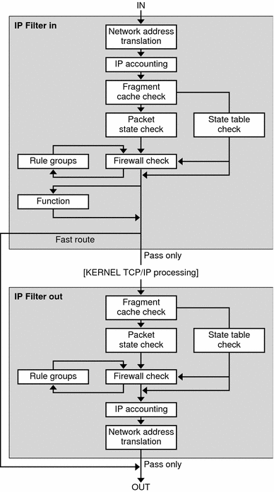

Previous
Previous
Solaris IP Filter (Overview)
This chapter provides an overview of Solaris IP Filter. For Solaris IP Filter tasks, see Chapter 26, Solaris IP Filter (Tasks).
This chapter contains the following information:
What's New in Solaris IP Filter
This section describes new Solaris IP Filter features in the Solaris release.
For a complete listing of new Solaris features and a description of Solaris releases, see Solaris Express, Developer Edition What's New
Packet Filter Hooks
Solaris Express, Developer Edition 2/07 Release: Packet filter hooks are now used for packet filtering in the Solaris Operating System. This feature offers the following advantages in system administration:
Packet filter hooks simplify the configuration of the Solaris IP filter.
Support for filtering packets across zones is now available.
Using filter hooks improves the performance of Solaris IP Filter.
For further details about these hooks, see Packet Filter Hooks. For tasks that are associated with packet filter hooks, see Chapter 26, Solaris IP Filter (Tasks).
IPv6 Packet Filtering for Solaris IP Filter
Solaris 10 6/06: For system administrators who have all or part of their network infrastructure configured with IPv6, Solaris IP Filter has been enhanced to include IPv6 packet filtering. IPv6 packet filtering can filter based on the source/destination IPv6 address, pools containing IPv6 addresses, and IPv6 extension headers.
The -6 option has been added to both the ipf command and the ipfstat command to use with IPv6. Although there is no change to the command line interface for the ipmon and ippool commands, these commands also support IPv6. The ipmon command has been enhanced to accommodate the logging of IPv6 packets, and the ippool command supports the inclusion of IPv6 addresses in pools.
For more information see IPv6 for Solaris IP Filter. For tasks associated with IPv6 packet filtering, see Chapter 26, Solaris IP Filter (Tasks).
Introduction to Solaris IP Filter
Solaris IP Filter replaces the SunScreen™ firewall as the firewall software for the Solaris Operating System (Solaris OS). Like the SunScreen firewall, Solaris IP Filter provides stateful packet filtering and network address translation (NAT). Solaris IP Filter also includes stateless packet filtering and the ability to create and manage address pools.
Packet filtering provides basic protection against network-based attacks. Solaris IP Filter can filter by IP address, port, protocol, network interface, and traffic direction. Solaris IP Filter can also filter by an individual source IP address, a destination IP address, by a range of IP addresses, or by address pools.
Solaris IP Filter is derived from open source IP Filter software. To view license terms, attribution, and copyright statements for open source IP Filter, the default path is /usr/lib/ipf/IPFILTER.LICENCE. If the Solaris OS has been installed anywhere other than the default, modify the given path to access the file at the installed location.
Information Sources for Open Source IP Filter
The home page for the open source IP Filter software by Darren Reed is found at http://coombs.anu.edu.au/~avalon/ip-filter.html. This site includes information for open source IP Filter, including a link to a tutorial entitled "IP Filter Based Firewalls HOWTO" (Brendan Conoboy and Erik Fichtner, 2002). This tutorial provides step-by-step instructions for building firewalls in a BSD UNIX environment. Although written for a BSD UNIX environment, the tutorial is also relevant for the configuration of Solaris IP Filter.
Solaris IP Filter Packet Processing
Solaris IP Filter executes a sequence of steps as a packet is processed. The following diagram illustrates the steps of packet processing and how filtering integrates with the TCP/IP protocol stack.
Figure 25-1 Packet Processing Sequence
The packet processing sequence includes the following:
Network Address Translation (NAT)
The translation of a private IP address to a different public address, or the aliasing of multiple private addresses to a single public one. NAT allows an organization to resolve the problem of IP address depletion when the organization has existing networks and needs to access the Internet.
IP Accounting
Input and output rules can be separately set up, recording the number of bytes that pass through. Each time a rule match occurs, the byte count of the packet is added to the rule and allows for collection of cascading statistics.
Fragment Cache Check
If the next packet in the current traffic is a fragment and the previous packet was allowed, the packet fragment is also allowed, bypassing state table and rule checking.
Packet State Check
If keep state is included in a rule, all packets in a specified session are passed or blocked automatically, depending on whether the rule says pass or block.
Firewall Check
Input and output rules can be separately set up, determining whether or not a packet will be allowed through Solaris IP Filter, into the kernel's TCP/IP routines, or out onto the network.
Groups
Groups allow you to write your rule set in a tree fashion.
Function
A function is the action to be taken. Possible functions include block, pass, literal, and send ICMP response.
Fast-route
Fast-route signals Solaris IP Filter to not pass the packet into the UNIX IP stack for routing, which results in a TTL decrement.
IP Authentication
Packets that are authenticated are only passed through the firewall loops once to prevent double-processing.